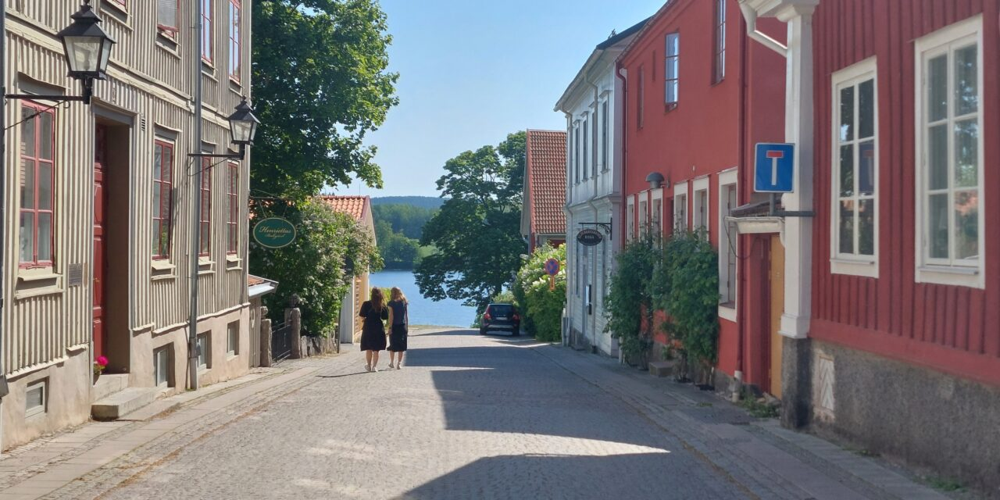

Jag heter Mats och kommer ursprungligen från en liten stad som heter Nora utanför Örebro där jag bor för närvarande. Jag brinner för att säkerställa att programvara är av högsta kvalitet genom rigorösa tester och har ett öga för detaljer och en stark drivkraft att bidra till högkvalitativa lösningar.
Jag har två års erfarenhet av mjukvarutestning och har arbetat med både manuella och automatiserade tester för att identifiera och förebygga buggar. Jag har erfarenhet av testverktyg som Playwright och Selenium samt testhantering i Jira.
Dessutom har jag grundläggande programmeringskunskaper (Java, C#, Javascript, etc.), vilket hjälper mig att skriva och analysera automatiserade tester. Att arbeta i ett agilt team är något jag tycker om, eftersom det ger möjlighet till nära samarbete och kontinuerlig förbättring av testprocesserna. Jag går för närvarande en kurs i Fullstack för att ytterligare bredda mina kunskaper.
Som person är jag noggrann, lösningsorienterad och har en hög arbetsmoral. Jag uppskattar utmaningar och trivs i en miljö där jag kan använda mina analytiska färdigheter för att identifiera och lösa problem. Mina kollegor beskriver mig vanligtvis som en engagerad och samarbetsvillig person som alltid strävar efter att leverera hög kvalitet.
Så om du är intresserad av att arbeta med en driven och engagerad person, kontakta mig bara. Klicka på "Kontakta mig" så hör jag av mig!
Med vänliga hälsningar Mats